voltar ao módulo
Harmonia das Cores
- Cores primárias: 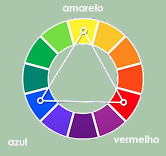
- Cores secundárias: 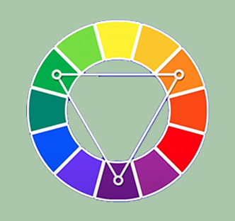
- Cores terciárias: 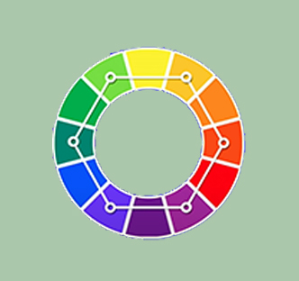
- Temperatura de cores: 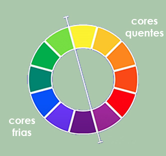
- Cores complementares: 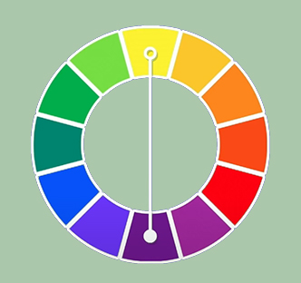
- Cores análogas: 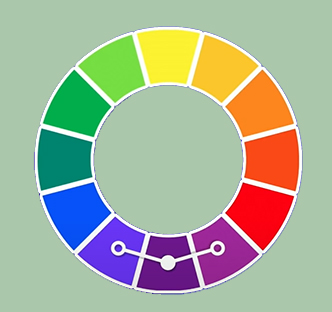
- Cores análogas e uma complementar: 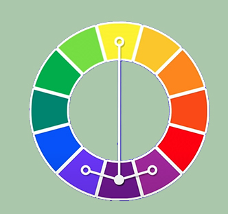
- Cores análogas relacionadas: 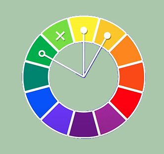
- Cores intercaladas: 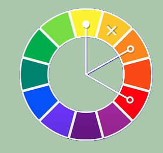
- Cores triádicas: 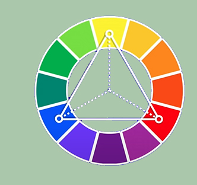
- Cores em quadrado: 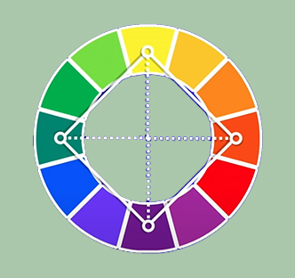
- Cores tetrádicas: 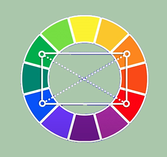
- Cores monocromia 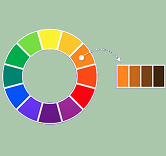
As cores primárias são compostas pelo: amarelo, vermelho e azul.
As cores primárias são compostas pelo: laranja, violeta e verde.
As cores primárias são compostas pelo: laranja, violeta e verde.
As cores dividas em cores quentes e cores frias.
As cores complementares são aquelas que dão um contraste da cor principal, sendo ela a cor oposta.
As cores análogas são cores que estão lado a lado da cor escolhida, dando toque de suvisação.
As cores análogas são cores que estão lado a lado da cor escolhida, dando toque de suvisação, tendo ainda, a cor oposta da princial como a cor complementar gerando o contraste.
As cores análogas relacionadas sao uma outra probabilidade na escolha da paleta de cores.
As cores análogas são uma outra probabilidade na escolha da paleta de cores.
As cores triádicas são uma outra probabilidade dentro das cores intercaladas na escolha da paleta de cores.
As cores em quadrado são uma outra probabilidade dentro das cores intercaladas na escolha da paleta de cores.
As cores tetrádicas são uma outra probabilidade dentro das cores intercaladas na escolha da paleta de cores.
As cores monocromia trabalha apenas com uma cor, e nela é modificado duas caracteristicas: a saturação e a luminosidade. Faremos isso por três vezez e teremos uma paleta de quatro cores.
voltar ao módulo